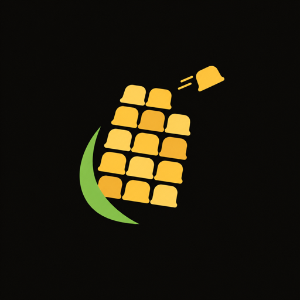
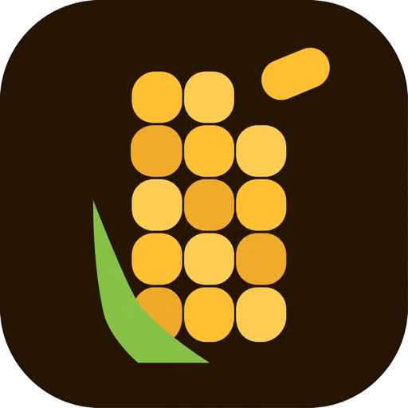
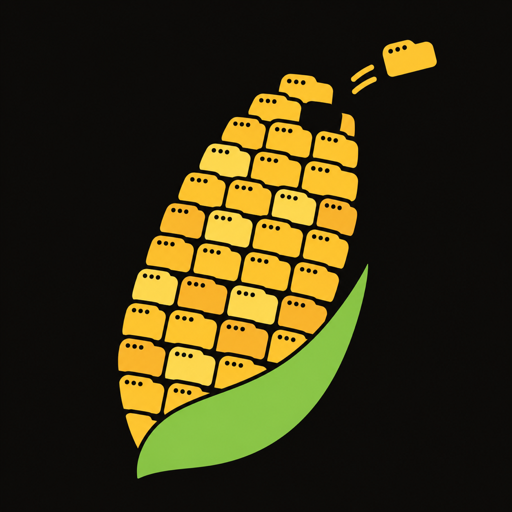
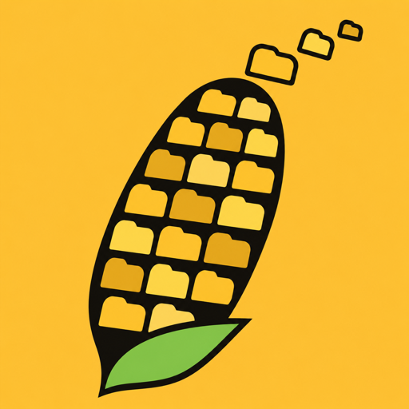
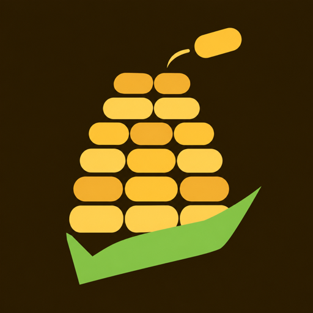

Corn logo concept
Tab Cob
Each kernel is a browser tab, so the corn literally is the browser. One tab is already flying off the top: that's the Flush Button in a single image, with your tabs cleared before you finish reading. It's flat and geometric with one sharp leaf, so it stays clever without looking like a real cob.
01The mark

02App icon
Dark wallpaperLight wallpaper03On the home screen
9:415G ▮▮▮ 82%
9:41
Thursday, 5 November
Clock
Notes
Camera
Messages
Calendar
CornFiles
Calculator
Settings
04Small sizes
1929648On a 420px screen the 192px icon uses most of the width, so 96 and 48 are stacked next to it.
05Lockup
corncorn06Alternates




